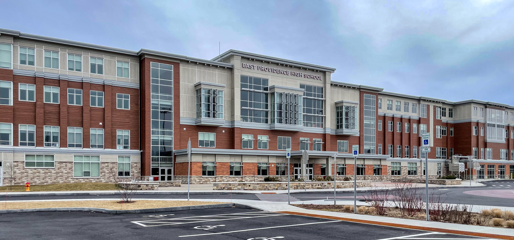

Schools
Orlo Avenue
I attended three different elementary schools, but in 2nd grade I was placed in Orlo Avenue Elementary. I consider this my definte elementary school due to the rest of my elementary school days being at Orlo. I loved it, and met many of my childhood friends.
Martin Middle School
MMS was a time in my life where I was finally finding myself and figuring out how I wanted to be percieved. I figured out the school subjects I liked and also maintain an amazing grade point average. I have many things I disliked about MMS including the exclusion of certain social groups but there's many things I loved as well such as the clubs and friends I met.
East Providence High School
EP High was my favorite school that I've attended. I finished off my education with all my childhood friends and realized I like school. School was a social common ground but a source of knowledge as well. I loved it.
